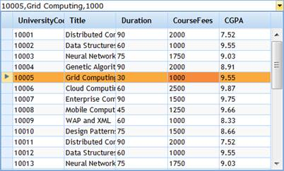

To know how to create an ASP.NET MVC application and add Essential Grid to the application, refer to the Getting Started section.
This section guides you on creating a multicolumn drop-down which includes the following steps.
1. Create a MultiColumnDropDown control in the view and set the data source using the Datasource() method.
|
View [ASPX] <%=Html.Syncfusion().MultiColumnDropDown<Student>("MultiColumnDropdown") .Datasource((IEnumerable) ViewData["data"]) .DisplayExpression(new int[] {2, 3, 5}) .Width(500) .Text("--Select--") %> |
|
View [cshtml] @(new HtmlString(Html.Syncfusion().MultiColumnDropDown<Student>("MultiColumnDropdown") .Datasource((IEnumerable) ViewData["data"]) .DisplayExpression(new int[] {2, 3, 5}) .Width(500) .Text("--Select--") .ToString()))
|
2. Set its data source in ViewData and render the view.
|
/// <summary> /// Used for rendering the multicolumn drop-down initially. /// </summary> /// <returns>Veiw page; it displays the multicolumn drop-down.</returns> public ActionResult Index() {
ViewData["data"] = new StudentDataContext().JSONStudent.Skip(0).Take(30).ToList(); return View(); } |
Run the application. The multicolumn drop-down will appear as shown below.

Figure 302: MultiColumnDropDown Control
A sample that demonstrates a basic MultiColumnDropdown control can be downloaded from the following link.
http://help.syncfusion.com/Support/grid_mvc/v8.3.0.20/UG/MvcMultiColumnDropdownSample.zip
 Note: The version number for the assemblies has
been set to 8.3.0.20 in the Web.config file of the attached sample. Please
change the version number to the appropriate version in the Web-2008.config or
Web-2010.config files (available in root directory) and those will automatically
be updated in the Web.config file.
Note: The version number for the assemblies has
been set to 8.3.0.20 in the Web.config file of the attached sample. Please
change the version number to the appropriate version in the Web-2008.config or
Web-2010.config files (available in root directory) and those will automatically
be updated in the Web.config file.